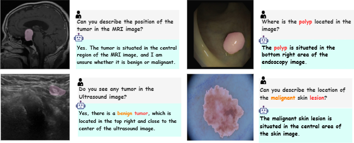
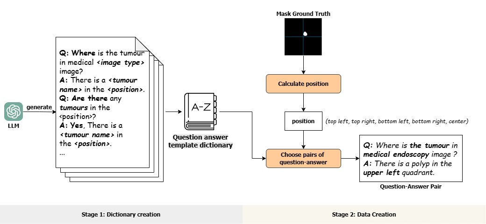
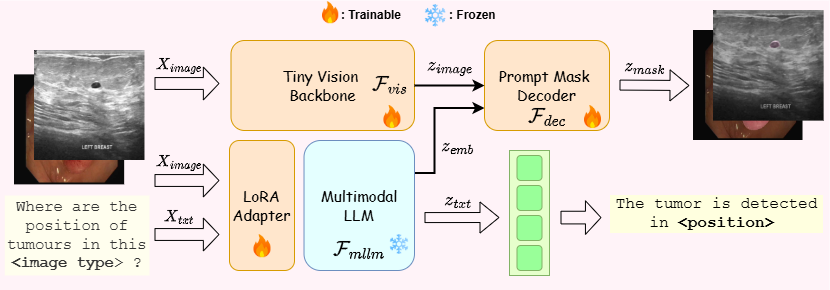
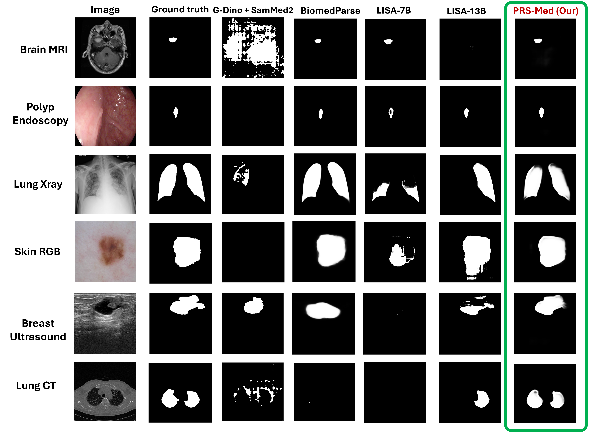

PRS-Med achieves state-of-the-art on all 6 medical imaging modalities, with gains of +31.2% mDice on Lung CT and +13.6% mDice on Brain MRI over the best prior methods. We also release PosMed — 116K expert-validated position-reasoning QA pairs — the first dataset of its kind for spatially-grounded medical segmentation. Dataset, model, and code will be open-sourced.

Medical image segmentation requires more than pixel-level pattern recognition — it demands spatial position reasoning that reflects how clinicians communicate findings. When a radiologist says "there is a mass in the upper-left lobe," they are linking anatomical position to pathological presence. Yet existing medical multimodal large language models (MLLMs) and segmentation systems struggle to bridge this gap.
We introduce PRS-Med, a unified framework for Position Reasoning Segmentation in medical imaging, together with PosMed, the first large-scale benchmark dataset designed for this task. PosMed contains 116,000 expert-validated, spatially-grounded QA pairs derived from 38,731 images across six imaging modalities — CT, MRI, X-ray, ultrasound, endoscopy, and dermatology — built via a two-stage automated pipeline with radiologist review.
PRS-Med integrates a TinySAM vision encoder with LLaVA-Med via LoRA adaptation, using a cross-attention fusion module to produce segmentation masks conditioned on free-form spatial language queries. Our Clinical Action Zones approach encodes position using interpretable anatomical quadrants rather than pixel-coordinate regression, aligning model outputs with natural radiologist language. Extensive experiments across six modalities demonstrate state-of-the-art performance in both segmentation accuracy and position reasoning.
The first large-scale benchmark for spatially-grounded QA and segmentation in medical imaging.
116K
Expert-Validated QA Pairs
38,731
Medical Images
6
Imaging Modalities
9
Source Datasets
55
QA Templates

Template Preparation
55 QA templates co-designed with 3 doctors, then linguistically polished by GPT-4 for naturalness and clinical accuracy.
Position Extraction
Bounding-box centroids from ground-truth segmentation masks are mapped to one of five Clinical Action Zones.
GPT QA Generation
Templates and extracted positions are combined via GPT to generate ~310K diverse, clinically-phrased QA pairs.
Expert Radiologist Validation
Board-certified radiologists review for medical accuracy, positional relevance, and clinical plausibility via majority voting — yielding 116K final pairs.
A unified framework for position-aware natural language segmentation.

Stage 1 — Feature Alignment. The vision encoder and LLM are frozen; only the cross-attention fusion module is trained to align visual and language representations.
Stage 2 — End-to-End Fine-tuning. All components are jointly optimized on PosMed using a combined objective: L = LBCE + LDice + 0.5 · LCE, balancing mask quality and language generation.
Rather than regressing pixel coordinates, PRS-Med encodes lesion position using five interpretable quadrants: Top-Left, Top-Right, Bottom-Left, Bottom-Right, and Center — derived from bounding-box centroids of ground-truth masks.
This design mirrors the spatial language radiologists use in clinical reports ("upper-right lobe," "lower-left quadrant") and produces outputs that align naturally with clinical documentation.
| Component | Module | Output Shape | Notes |
|---|---|---|---|
| Vision Encoder | TinySAM (TinyViT) | 256 × 16 × 16 | Unfrozen for medical adaptation |
| Multimodal LLM | LLaVA-Med + LoRA | b × l × 4096 | rank=16, α=16; full hidden states used |
| Fusion Module | Cross-Attention + skip | b × 256 × 16 × 16 | Projects both streams to 256-dim |
| Mask Decoder | Transposed Conv | b × 1 × 1024 × 1024 | BCE + Dice loss |
Evaluated across 6 modalities against segmentation and position reasoning baselines, all fine-tuned on PosMed.
| Method | Breast US | Brain MRI | Lung CT | Lung X-ray | Polyp | Skin |
|---|---|---|---|---|---|---|
| Segmentation Baselines | ||||||
| G-DINO + SAM-Med2D | 0.768 / 0.693 | 0.607 / 0.591 | 0.657 / 0.567 | 0.949 / 0.916 | 0.796 / 0.751 | 0.868 / 0.794 |
| BiomedParse | 0.781 / 0.697 | 0.681 / 0.625 | 0.748 / 0.664 | 0.961 / 0.931 | 0.821 / 0.772 | 0.885 / 0.815 |
| LISA-7B | 0.783 / 0.698 | 0.667 / 0.625 | 0.736 / 0.667 | 0.972 / 0.951 | 0.824 / 0.774 | 0.893 / 0.822 |
| LISA-13B | 0.790 / 0.706 | 0.708 / 0.668 | 0.737 / 0.668 | 0.972 / 0.951 | 0.826 / 0.775 | 0.895 / 0.823 |
| PRS-Med (Ours) | 0.817 / 0.729 | 0.803 / 0.757 | 0.968 / 0.943 | 0.973 / 0.952 | 0.843 / 0.791 | 0.901 / 0.833 |
| Method | Breast US | Brain MRI | Lung CT | Lung X-ray | Polyp | Skin |
|---|---|---|---|---|---|---|
| Medical MLLM Baselines | ||||||
| LLaVA-Med | 0.58 / 79.75% | 0.61 / 80.17% | 0.65 / 88.17% | 0.59 / 82.08% | 0.65 / 55.64% | 0.71 / 92.08% |
| HuatuoGPT | 0.59 / 81.63% | 0.62 / 81.17% | 0.66 / 88.17% | 0.60 / 84.00% | 0.66 / 56.64% | 0.72 / 92.08% |
| Med-MoE | 0.60 / 81.63% | 0.63 / 81.17% | 0.67 / 88.17% | 0.61 / 84.00% | 0.67 / 56.64% | 0.73 / 92.08% |
| MedVLM-R1 | 0.61 / 81.63% | 0.64 / 81.17% | 0.69 / 88.17% | 0.62 / 84.00% | 0.68 / 55.64% | 0.74 / 92.08% |
| PRS-Med (Ours) | 0.64 / 92.92% | 0.67 / 86.17% | 0.71 / 76.67% | 0.64 / 94.36% | 0.71 / 72.43% | 0.76 / 96.31% |
Best results bold. PRS-Med (green) leads on 5/6 modalities for position reasoning and all 6 for segmentation.
PRS-Med takes a position-grounded natural language query and returns a segmentation mask across all six modalities.

@article{trinh2025prs,
title={Prs-med: Position reasoning segmentation with vision-language model in medical imaging},
author={Trinh, Quoc-Huy and Nguyen, Minh-Van and Zeng, Jung and Bagci, Ulas and Jha, Debesh},
journal={arXiv preprint arXiv:2505.11872},
year={2025}
}